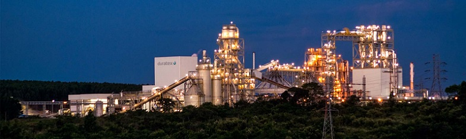

Agudos e Ecoeficiência
Agudos é um munícipio que fica a 24 km de Bauru. Sua população estimada em 2014 era de 32.484 habitantes numa área de 966,708 km². Agudos tem a sua ecônomia baseada na agricultura e pecuária, tendo também indústria de destaque mundial como a Duratex, sobressaindo a sua produção de madeira. A indústria possui extensas reservas no município que são administrados pela Duraflora.
Os painéis de MDF e MDP utilizam outros materiais como matéria-prima, sendo os principais a resina e papéis para revestimento. Para garantir o abastecimento, a Duratex construiu uma planta própria de resina em Agudos, cuja produção é totalmente direcionada para as fábricas localizadas no estado de São Paulo. A unidade Painéis Agudos, projeto iniciado em 2013 para aproveitamento de lodo da estação de tratamento de efluente e das cinzas provenientes da queima da biomassa na produção de composto orgânico deixou de encaminhar 19.845,2 toneladas de resíduos para aterro em 2014. Esse volume gerou em torno de 11 mil toneladas de composto orgânico fertilizante para as florestas da companhia.
Com o objetivo de diminuir suas emissões, em 2014 foi implantado um projeto piloto na fábrica de Agudos que expandiu progressivamente para todas as demais unidades industriais. O projeto consistiu, em sua primeira etapa, na realização de um diagnóstico energético detalhado da fábrica, que considerou o levantamento dos gastos térmicos e elétricos, de compressores, de refrigeração e outros para, em seguida, identificar as ações e os investimentos necessários para a redução do consumo de energia. Durante o ano de 2014, 4.712 pessoas visitaram a área de Vivência ambiental Piatan , de Agudos. Mesmo assim, na unidade de Agudos, que é próxima de áreas habitadas, existem registros de queixas quanto a ruídos e emissão de particulados, em situações pontuais.
Essa operação é sazonal, e são adotados cuidados para evitar esses impactos. São adotadas medidas de controle para mitigar os impactos mencionados.